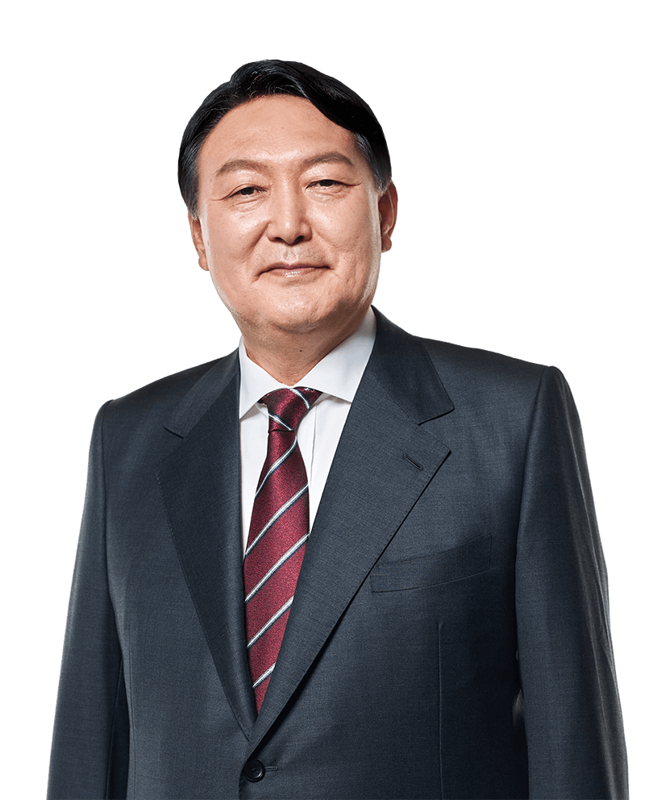

우리나라에서는 한 해에 몇 건의 성폭력 사건이 일어날까? 2020년 범죄 통계를 살펴보니,
일 년에 약 4만 건 정도의 성폭력 사건이 발생하고 있다. 강간이나 강제추행, 유사강간과
같은 전통적인 성폭력 해당 사건은 27,651건 발생했고, 최근 폭증하고 있는 각종 카메라와
인터넷 등 신기술을 이용한 신규 성폭력도 11,795건 발생했다. 이 4만 건과는 별도로 아동을
대상으로 성학대를 한 아동복지법 위반 사건과 아동청소년 성보호에 관한 법률 위반 사건도 있다.
성폭력 사건은 피해자의 나이를 가리지 않기에, 수많은 미성년자들도 성폭력 피해를 경험한다.
그러나 성장을 거의 마친 성인 피해자와는 달리 아직 발달 중에 있는 아동 청소년은 생각과 상황
판단에 중요한 역할을 하는 전두엽이 다 완성되지 못했기에, 이러한 점을 감안하여 성폭력 피해를 당한
아동청소년을 위한 각종 보호제도를 마련하고 있는 것이다.
헌법재판소는 같은 조항에 대해 이미 2013년 합헌결정(헌재 2013.12.26. 선고 2011헌바108 결정)을 했다.
“성범죄 피해 경험에 대한 반복적 회상과 이차 가해의 위험으로부터 피해아동을 보호해야 한다는 공익의 중
요성에 비춰 보았을 때, 영상녹화 제도로 인한 피고인의 반대신문권 제한이 부당하지 않고, 필요에 따라서는
피해자 소환이 가능한 만큼 피고인의 공정한 재판을 받을 권리가 형해화되었다고 볼 수 없다.”라는 것이 그
당시 합헌 결정의 주된 이유였다.
이번 위헌 결정의 대상이 된 규정은 “신뢰관계인 진술로 미성년자 진술 영상의 진정성립을 인정”하는 2003. 12.
성폭력범죄의처벌및피해자보호등에관한법률 제21조의 2(2004. 3. 시행)(이 당시 대상 피해자는 13세 미만 미성
년자였다가, 2006. 10. 16세 미만의 미성년자로 확대되었고, 2012.12.부터 19세 미만의 미성년자로 확대되었다.)
이다. 결정이 내려지던 2021년 12월은 이 조문이 만들어진 지 18년이 지난 시점이다. 18년 동안이나 사건 하나하나
로 켜켜이 쌓여 이루어진 아동 성범죄 수사와 재판 실무를 단번에 위헌결정으로 뒤엎을만한 기본권 침해는 대체 무엇
이었을까? 헌법재판소는 ‘피고인의 반대신문권’을 보장하기 위함이라고 강조한다.
"당신께 테이프를 전달하며"
음성사서함에서 떠나가지 못한 목소리를 해결해 줄 앞으로의 정부가 해야할 일은 무엇일까.
각 대선 후보들의 공약을 분석한 후 국민청원의 이야기를 담고 있는지 현황을 파악하며 마무리한다.
대선 후보 공약 정리
미성년자 성범죄 문제를 해결할 공약은 무엇인가요?
첫째, 국가는 농수산물의 수급균형과 유통구조의 개선에 노력하여 가격안정을 도모함으로써 농·어민의 이익을 보호하겠습니다. 둘째, 제5항에 의하여 법률이 확정된 후 또는 제4항에 의한 확정법률이 정부에 이송된 후 5일 이내에 대통령이 공포하지 아니할 때에는 국회의장이 이를 공포하겠습니다.

첫째, 국가는 농수산물의 수급균형과 유통구조의 개선에 노력하여 가격안정을 도모함으로써 농·어민의 이익을 보호하겠습니다. 둘째, 제5항에 의하여 법률이 확정된 후 또는 제4항에 의한 확정법률이 정부에 이송된 후 5일 이내에 대통령이 공포하지 아니할 때에는 국회의장이 이를 공포하겠습니다.
첫째, 국가는 농수산물의 수급균형과 유통구조의 개선에 노력하여 가격안정을 도모함으로써 농·어민의 이익을 보호하겠습니다. 둘째, 제5항에 의하여 법률이 확정된 후 또는 제4항에 의한 확정법률이 정부에 이송된 후 5일 이내에 대통령이 공포하지 아니할 때에는 국회의장이 이를 공포하겠습니다.
"회신받지 못한 두번째 메시지"
2013년 합헌결정 당시 반대의견은 2021년 위헌결정 다수의견에 ‘복붙’되었다. “영상녹화물의 진정성립을 피해자 아닌
신뢰관계인이 할 수 있고 피해자 소환은 필수가 아닌 재판부의 재량 판단이 되기에 피고인의 반대신문권이 보장되었다고
볼 수 없고, 증거보전제도나 비디오 중계장치에 의한 피해자 증인신문을 통해 피해자를 보호할 방법이 마련되어 있으므로
피고인의 반대신문권을 형해화하는 제도로서 위헌”이라는 것이다.
되묻지 않을 수 없다. 정말 아동을 상대로 성폭력을 저지른 피고인의 반대신문권은 침해되어 왔는가. 십년간 피해자 지원만
을 해온 내가 경험한 실무는 전혀 아니었다. 피해자의 진술이 담긴 영상녹화물이 버젓이 법원에 증거로 제출되어 있어도,
피고인측이 피해자를 법정에 증인으로 부르자고 증인신청을 한 경우, ‘진술영상이 있으니 아이는 부르지 맙시다.’하며 그
신청을 기각하는 판사는 한 번도 못 보았다. 피해자가 외국에 있어도, 출산을 했어도, 심한 스트레스를 호소하며 집밖으로
한 발도 못 나오는 정신적 어려움을 겪고 있어도 피해자는 기어이 법정에 불려나왔다.
그럼에도 불구하고 이 제도가 도입되었던 취지는, 영상녹화를 통해 진술함으로서 미성년 성폭력피해자가 피해 경험을 반복적
으로 진술하는 것을 최소화하고 법정진술과 반대신문 과정에서 받을 수 있는 2차 피해를 방지하기 위함이었다. 한줌도 안 되
는 반대신문권 침해 사례를 들며 아동 발달에 미치는 심대한 영향을 이유로 도입된 중요한 제도를 없애버렸다. 빈대 잡으려다
초가삼간 태운 꼴이다.
"당신께 테이프를 전달하며"
음성사서함에서 떠나가지 못한 목소리를 해결해 줄 앞으로의 정부가 해야할 일은 무엇일까.
각 대선 후보들의 공약을 분석한 후 국민청원의 이야기를 담고 있는지 현황을 파악하며 마무리한다.
대선 후보 공약 정리
미성년자 성범죄 문제를 해결할 공약은 무엇인가요?
첫째, 국가는 농수산물의 수급균형과 유통구조의 개선에 노력하여 가격안정을 도모함으로써 농·어민의 이익을 보호하겠습니다. 둘째, 제5항에 의하여 법률이 확정된 후 또는 제4항에 의한 확정법률이 정부에 이송된 후 5일 이내에 대통령이 공포하지 아니할 때에는 국회의장이 이를 공포하겠습니다.
첫째, 국가는 농수산물의 수급균형과 유통구조의 개선에 노력하여 가격안정을 도모함으로써 농·어민의 이익을 보호하겠습니다. 둘째, 제5항에 의하여 법률이 확정된 후 또는 제4항에 의한 확정법률이 정부에 이송된 후 5일 이내에 대통령이 공포하지 아니할 때에는 국회의장이 이를 공포하겠습니다.
첫째, 국가는 농수산물의 수급균형과 유통구조의 개선에 노력하여 가격안정을 도모함으로써 농·어민의 이익을 보호하겠습니다. 둘째, 제5항에 의하여 법률이 확정된 후 또는 제4항에 의한 확정법률이 정부에 이송된 후 5일 이내에 대통령이 공포하지 아니할 때에는 국회의장이 이를 공포하겠습니다.